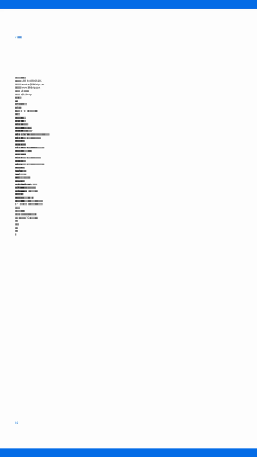
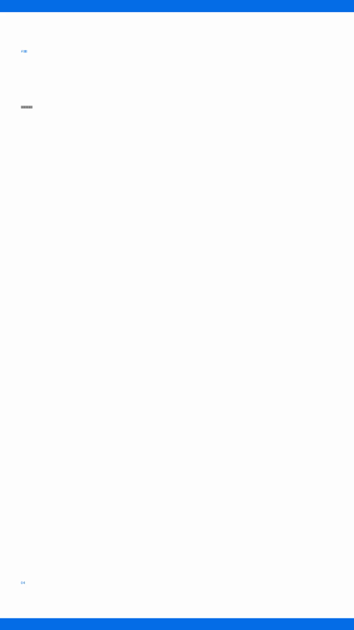
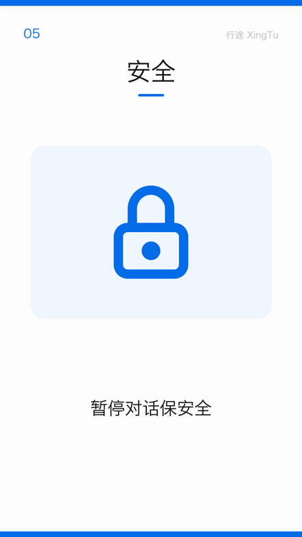
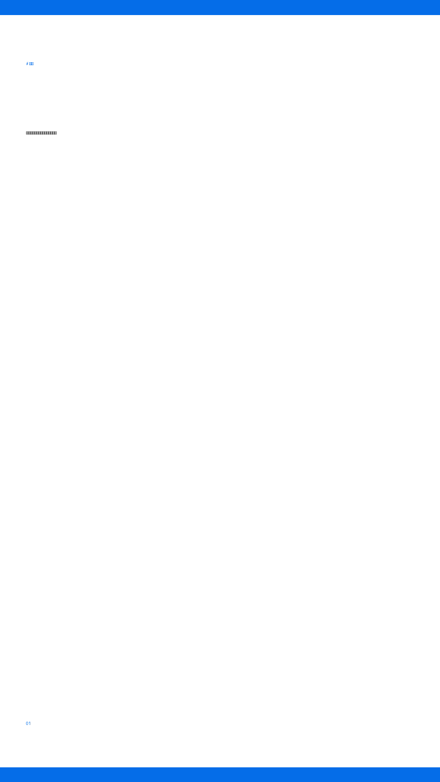
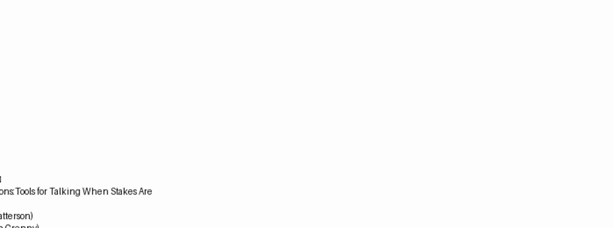
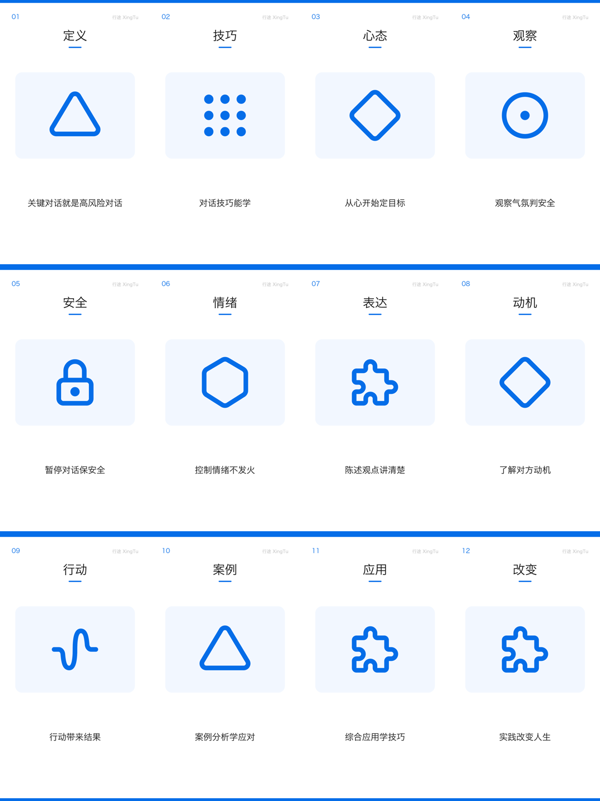
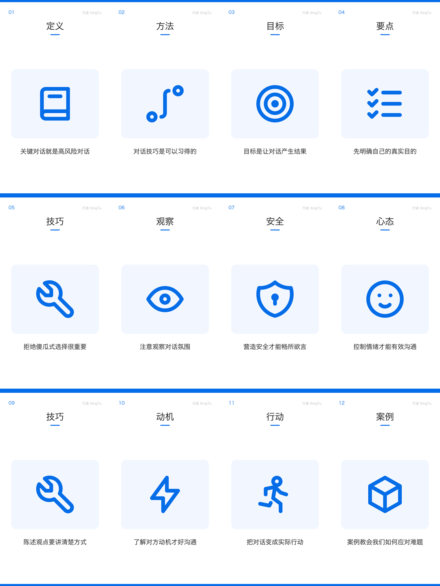

这份档案记的不是最终那支片子，而是画面从「读不了」变成「读得懂」的过程—— 包括中间那次退步。产品演进最有信息量的地方，恰恰在还没成型的那几版里。
「有没有内容」和「内容对不对」是两件事。前者看画面填充度，后者看同一批卡用了几个不同图标。
全部是从各代产物里现场抽帧的，不是重绘。注意第一代和第二代的区别——它们是两种不同的「没内容」。




纵轴 = 画面填充度（中部区域非白像素占比的采样均值）。注意 12:07 → 12:34 是往下走的。
为什么中间会退一步
第一代是降级模式的产物——本地模型权重还在下载，流水线退回「直接拿原文」的规则路径， 所以画面里字很多（但全挤成了竖条，还混进了 PDF 的版权页）。 权重就绪后切到真模型，口播稿被精炼到很短，而画面层当时还没能力接住这些短句，于是从「挤满」掉到了「全空」。 这一退不是故障，是换了实现路径之后的过渡态——记下来，是为了以后别人看到这条曲线不会误判成「改坏了」。
同一支片（v0）的另一处画面，裁掉边缘放大——画面里是这本书的英文版权页。

画面上能读到书名副标题片段、作者姓氏与 ISBN——抽取环节把版权页/元数据当成了正文， 并且中文文字宽度约束失效，被压成一条条竖线。两个缺陷叠在一起，才有了「条形码」这一代。
下面两张是同一本书、同一批 12 张卡、只差图标层与文案的两版总览。左边是 v2，右边是 v3。 这是整份档案里最有说服力的一组——变量被控制住了。


| 指标 | v2 修复前 | v3 修复后 |
|---|---|---|
| 12 卡出现的不同图标数 | 6 | 12 |
| 图标与文案语义相符 | 约 1/3 | 12/12 |
| 重复图标 | 拼图 ×3、菱形 ×2 | 0 |
| 画面填充度（中部墨量） | 0.0406 | 0.0491 |
真正的病根：不是词表不够大，是架构错位
图标词表是按「AI / 工程化主题词」建的（省 token、缓存、管线、部署…）， 而模型自由生成出来的却是叙事型抽象概念（心态、观察、动机、案例）。两个集合交集极小， 于是全部落空，退到「拿编号做散列、从 16 个中性图形里抓一个」——12 个球丢进 16 个箱子，撞车是必然。
药方不是补词表，是把受控词表前置进模型的输出约束：让模型从一个明确的清单里选， 而不是自由发挥后再事后翻译。
这也解释了一个容易骗过自己的地方：v2 和 v3 的画面填充度几乎一样（0.0406 vs 0.0491）。 只看「像素多不多」，两版是同一档；要看出差别，必须换第二个指标——这批卡用了几个不同的图形。 一维指标会把「有内容」和「有信息」判成同一件事。
按时间排列，append-only。新增一代就往这里加一行，并把代表帧放进 assets/evolution/。
| 代 | 时刻 | 产物 | 画面实况 | 填充度 | 图标去重 | 触发变化的原因 |
|---|---|---|---|---|---|---|
| 没内容 | 12:07 |
关键对话_sample.mp4 |
文字挤成竖条 + 漏进 PDF 版权页 | 0.0061 | — | 降级模式（模型权重未就绪），直接拿原文 |
| 没内容 | 12:34 |
关键对话_ollama.mp4 |
版式完整，内容层全空 | 0.0001 | — | 切真模型重跑；口播稿变短，画面层没接住 |
| 没内容 | 14:30 |
人话翻译术工作目录 |
卡片只剩序号与版式线；配音有 0 字节残件 | 0.0003 | — | 在线 TTS 回退链路卡死，出片中断 |
| 有内容 | 18:04 |
关键对话_拖拽版.mp4 |
序号 / 标题 / 图标 / 释义齐备，图标语义不准 | 0.0406 | 6 / 12 | 版式与图标层打通；但词表与模型产出错位 |
| 有信息 | 18:15 |
关键对话_v2.mp4 |
图标能表意，文案一句说清 | 0.0491 | 12 / 12 | 受控概念清单前置进模型输出约束 |
| 有信息 | 20:26 |
chapters/第1、2章.mp4 |
按章点播的稳定批量产物 | 0.0500 | — | 目录索引 + 按需生成落地，质量趋于稳定 |
本页每个数字都可由下面两条口径复算。填充度是相对指标，只用于同版式内纵向比较，不做绝对判断。
# 填充度：中部区域非白像素占比，在片子上等距采样取均值 ffprobe -v error -show_entries format=duration -of json <产物.mp4> ffmpeg -v error -ss <t> -i <产物.mp4> -frames:v 1 -f image2pipe -vcodec png - \ | # 取 ROI = 高 12%–80% / 宽 8%–92%，统计 min(RGB) < 215 的占比 # 图标去重数：数同一批卡片 PNG 里有几个不同的图形（肉眼实图核对，勿只看文件名） ffmpeg -y -v error -pattern_type glob -i 'card_*.png' \ -vf "scale=270:-1,tile=4x3" -frames:v 1 overview.png
两处需要小心的口径： ① 填充度含采样噪声，不同版式的卡片不可横向比（v0 的「条形码」填充度比 v1 高，但 v0 完全不可读）； ② 上表 12:07 的 0.0061 是采样均值，该片约一半帧接近空白，均值会被拉低。